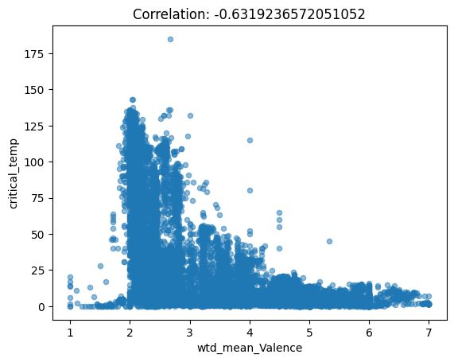

Student 1: Sarang Galada, sarang.g-25@scds.saiuniversity.edu.in
Student 2: R Sai Pranav Aadhitya, saipranavaadhitya.r-25@scds.saiuniversity.edu.in
1. Introduction
2. Dataset and Features
Details of the dataset: This project makes use of the Superconductivity dataset from University of California, Irvine’s Machine Learning Repository, sourced from Dr. Kam Hamidieh. The dataset consists of 21,263 rows and 82 columns. The rows represent different superconductor compounds (for eg. La2CuO4), while the columns depict various statistical measures of their chemical properties (for eg. mean Atomic Mass, standard deviation of Thermal Conductivity, range of Heat of Fusion and so on). Of these 82 columns, 81 are the input features for our learning model, with the 82nd column (Critical Temperature) being the target variable we wish to predict.
Exploratory Data Analysis: As mentioned earlier, the dataset contains 21,263 rows and 82 columns.
Majority of the columns are of type float64, with the exception of two (number_of_elements, range_Valence), which are of type int64 and hence take discrete values. The dataset doesn’t contain any missing values, although it was found to contain 66 duplicate rows, which had to be dropped as part of data cleaning.
To understand the relationship between the features of the dataset and the target variable critical_temp, we make use of scatterplots and correlation matrices. Samples of some scatterplots are shown below:



As can be seen, we do not observe distinct linear patterns emerge between the features with critical_temp, but in the case of some features, observe an increasing or decreasing trend. The values in the correlation matrix support this fact, as those features show a reasonably high absolute value of correlation with critical_temp, indicating some amount of linear dependence.
3. Methods
3.1 Baseline - Linear Regression
4. Experiments & Results
4.1 Protocol
Details about splitting into training and testing datasets: The data was split into 80% training and 20% testing, and reproducibility was added with a seed value of 42.
What kind of preprocessing was done to the dataset.
critical_temp, and eliminated about 25% of the columns that were correlated by less than ~0.261.4.2 Results
Baseline results:
Include tables and figures (plots) for various experiments:
5. Discussion
6. Conclusion
4.2 Results
Baseline results:
Include tables and figures (plots) for various experiments:
5. Discussion
6. Conclusion
7. References